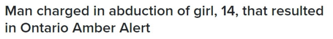
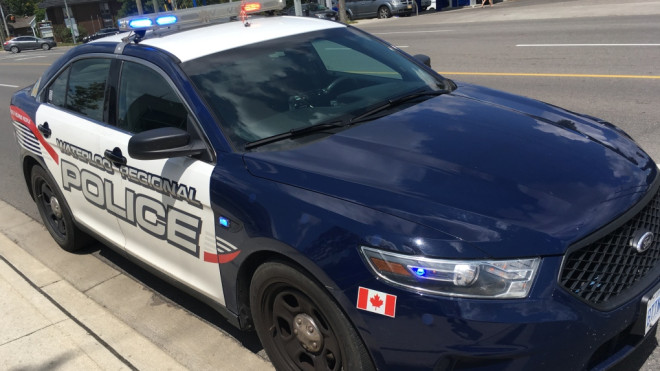

安省滑铁卢一名男子因绑架一名14岁女孩而被捕并受到指控，该事件导致警方在周一傍晚向全省发布了安珀警报（Amber Alert）。


图源：Dan Lauckner / CTV Kitchener
安省省警（OPP）在晚上7:15左右发布了警报，称失踪少女最后一次出现在基奇纳（Kitchener）。
大约一个小时后，她在安省Simcoe County被安全找到。
安珀警报在8点前取消。
据悉，滑铁卢地区警局（WRPS）官员最初接到报警后，赶到Strasburg Road和Rush Meadow Street地区的一处住所，调查入室盗窃，以及一名14岁女孩失踪。
周二，警方表示，一名36岁的滑铁卢男子被控持枪绑架以及入室行窃，并意图犯下可公诉罪行。
女性受害者与被告相识。警方未透露被控的姓名，他仍被拘留，等待保释听证会。
调查仍在进行中，预计将会有更多指控。